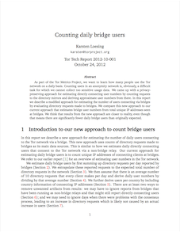

Home | Clients Relays Bridges Pluggable Transports Hidden Services | Bandwidth Performance Diversity | About
| Abstract: | As part of the Tor Metrics Project, we want to learn how many people use the Tor network on a daily basis. Counting users in an anonymity network is, obviously, a difficult task for which we cannot collect too sensitive usage data. We came up with a privacy-preserving approach for estimating directly connecting user numbers by counting requests to the directory mirrors and deriving approximate user numbers from there. In this report we describe a modified approach for estimating the number of users connecting via bridges by evaluating directory requests made to bridges. We compare this new approach to our current approach that estimates bridge user numbers from total unique IP addresses seen at bridges. We think that results from the new approach are closer to reality, even though that means there are significantly fewer daily bridge users than originally expected. |
| Author: | Karsten Loesing |
| BibTeX entry: |
@techreport{tor-2012-10-001,
author = {Karsten Loesing},
title = {Counting daily bridge users},
institution = {The Tor Project},
number = {2012-10-001},
year = {2012},
month = {October},
url = {https://research.torproject.org/techreports/counting-daily-bridge-users-2012-10-24.pdf}
}
|
This material is supported in part by the National Science Foundation under Grant No. CNS-0959138. Any opinions, finding, and conclusions or recommendations expressed in this material are those of the author(s) and do not necessarily reflect the views of the National Science Foundation.
"Tor" and the "Onion Logo" are registered trademarks of The Tor Project, Inc.
Data on this site is freely available under a CC0 no copyright declaration: To the extent possible under law, the Tor Project has waived all copyright and related or neighboring rights in the data. Graphs are licensed under a Creative Commons Attribution 3.0 United States License.
Design prototype note: There are currently four types of metrics pages: graph, table, data, link. Each link page contains exactly one external link with optional thumbnail or full preview image and explanations. Adding new link pages should be easy.